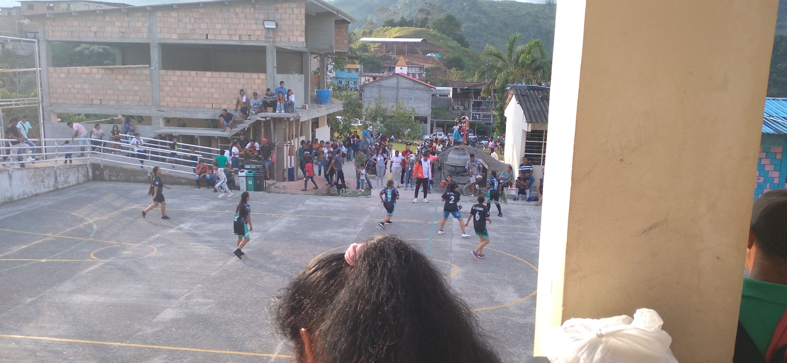
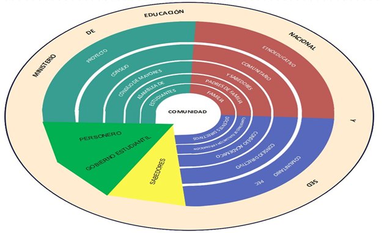

Educación propia, transformadora e inclusiva
La Institución Etnoeducativa de Sidón es un establecimiento educativo oficial adscrito a la Secretaría de Educación Departamental de Nariño, ubicado en el corregimiento de Sidón – Bajo Patía, municipio de Cumbitara.
Ofrecemos educación continua y articulada en los niveles de preescolar, básica primaria, básica secundaria y educación media, sustentada en una propuesta formativa orientada al fortalecimiento irrestricto de los valores propios de la paz, los derechos humanos y la sana convivencia territorial.
En virtud de lo anterior, se desarrollan procesos de aprendizaje desde los cuales se busca fortalecer el modelo pedagógico fundamentado en lo social, humanista, comunitario y cultural. Este modelo privilegia el reconocimiento profundo de la diversidad de nuestra población estudiantil y el desarrollo de sus competencias de acuerdo a sus ritmos individuales y colectivos de aprendizaje.
Para lograrlo, la institución ha desarrollado estrategias pedagógicas eficaces que proporcionan a nuestro cuerpo docente herramientas didácticas pertinentes y contextualizadas. Lo más representativo es que se ha facilitado la atención a la multiplicidad según sus necesidades específicas; siguiendo el marco normativo nacional y etnoeducativo, concebimos la inclusión como un asunto de derechos y valores fundamentales, accediendo a una educación flexible y contextualizada social y culturalmente con el entorno escolar de la cuenca del río Patía.
Rectoría y Liderazgo
Segunda Georgina Rosero Álvarez
Rectora Institucional
«La educación es el instrumento más poderoso para que nuestros niños y jóvenes abran senderos de progreso, conserven su memoria ancestral y construyan la paz duradera en nuestro amado Sidón».

Sede Principal en Sidón
Espacios modernos adaptados al clima tropical húmedo, diseñados para optimizar el aprendizaje, la investigación y la vida comunitaria.
Capacidad e Instalaciones Actuales
- Edificio Central de Dos Niveles: 8 aulas amplias y ventiladas, concluidas con recursos de regalías municipales en 2017.
- Accesibilidad Universal: Planta física dotada de ascensor para personas con movilidad reducida y rampas de acceso.
- Tecnología e Informática: Sala de cómputo con portátiles, computadores de escritorio, tabletas y conectividad.
- Equipamiento en Aulas: Cada salón de clases cuenta con televisor y recursos multimedia de soporte pedagógico.
- Restaurante Escolar: Amplia zona de comedor y cocina dotada, atendida por manipuladoras autorizadas.
- Deporte y Cultura: Polideportivo cubierto para actividades lúdicas, actos cívicos y festividades tradicionales.
- Residencia Escolar: Alojamientos protegidos para acoger a estudiantes de veredas apartadas del río Patía.
Docentes y Gobierno Escolar
Un equipo humano comprometido con la vocación docente rural, trabajando en sinergia con el Consejo Comunitario Menor de Sidón y COPDICONC.

Cuerpo Docente y Pedagógico
La institución cuenta con docentes especializados en áreas de Biología, Química, Física, Humanidades y Lengua Castellana, Educación Física y Deportes, Artística y Danza Tradicional, Matemáticas, Ciencias Sociales, Tecnología e Informática, y Básica Primaria rural.
Maestros y maestras que día a día recorren caminos de herradura y navegan el río Patía para impartir clases en las 23 sedes.

Gobierno y Participación Escolar
Espacios democráticos activos conformados por el Consejo Directivo, el Consejo Académico, la Personería Estudiantil, el Consejo de Estudiantes y la Asociación y Consejo de Padres de Familia.
Fomentando el liderazgo juvenil y la toma de decisiones concertada en beneficio de todo el corregimiento.
Organigrama Institucional
Representación gráfica de las dependencias directivas, académicas, administrativas y de participación comunitaria que articulan a la sede principal y las 22 sedes rurales.

Fuente: Manual de Funciones y Proyecto Educativo Comunitario (PEC) • Aprobado por Consejo Directivo.